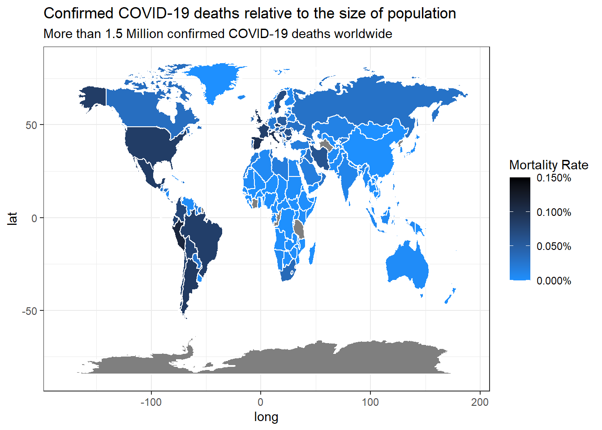

Journal (reproducible report)
Sandeep Madhusudan
2020-11-05
IMPORTANT: You can delete everything in here and start fresh. You might want to start by not deleting anything above this line until you know what that stuff is doing.
This is an .Rmd file. It is plain text with special features. Any time you write just like this, it will be compiled to normal text in the website. If you put a # in front of your text, it will create a top level-header.
1 My first post
Last compiled: 2020-12-06
Notice that whatever you define as a top level header, automatically gets put into the table of contents bar on the left.
1.1 Data Aquisition
# WEBSCRAPING ----
# 1.0 LIBRARIES ----
library(tidyverse) # Main Package - Loads dplyr, purrr, etc.
library(rvest) # HTML Hacking & Web Scraping
library(xopen) # Quickly opening URLs
library(jsonlite) # converts JSON files to R objects
library(glue) # concatenate strings
library(stringi) # character string/text processing
# 1.1 COLLECT PRODUCT TYPES ----
url_home <- "https://www.radon-bikes.de/"
xopen(url_home)## Running cmd /c start "\"\"" /b "https://www.radon-bikes.de/"html_home <- read_html(url_home)
bike_family_tbl <- html_home %>%
html_nodes(css = ".megamenu__item > a") %>%
html_attr('href') %>%
discard(.p = ~stringr::str_detect(.x,"wear")) %>%
enframe(name = "position", value = "cat_subcat_url") %>%
mutate(family_id = str_glue("https://www.radon-bikes.de{cat_subcat_url}bikegrid"))
bike_family_tbl## # A tibble: 8 x 3
## position cat_subcat_url family_id
## <int> <chr> <glue>
## 1 1 /mountainbike/hardtail/ https://www.radon-bikes.de/mountainbike/har~
## 2 2 /mountainbike/fullsuspe~ https://www.radon-bikes.de/mountainbike/ful~
## 3 3 /trekking-cross/trekkin~ https://www.radon-bikes.de/trekking-cross/t~
## 4 4 /trekking-cross/cross/ https://www.radon-bikes.de/trekking-cross/c~
## 5 5 /e-bike/mountainbike/ https://www.radon-bikes.de/e-bike/mountainb~
## 6 6 /e-bike/trekking/ https://www.radon-bikes.de/e-bike/trekking/~
## 7 7 /roadbike/carbon/ https://www.radon-bikes.de/roadbike/carbon/~
## 8 8 /roadbike/alu/ https://www.radon-bikes.de/roadbike/alu/bik~# 2.0 COLLECT BIKE DATA ----
bike_category_url <- bike_family_tbl$family_id[1]
xopen(bike_category_url)## Running cmd /c start "\"\"" /b \
## "https://www.radon-bikes.de/mountainbike/hardtail/bikegrid"html_bike_category <- read_html(bike_category_url)
bike_name_tbl <- html_bike_category %>%
html_nodes(css = ".m-bikegrid__info .a-heading--small") %>%
html_text() %>%
enframe(name = "position", value = "name")
bike_name_tbl ## # A tibble: 33 x 2
## position name
## <int> <chr>
## 1 1 "\n JEALOUS 8.0\n ~
## 2 2 "\n JEALOUS 9.0\n ~
## 3 3 "\n JEALOUS 10.0\n ~
## 4 4 "\n JEALOUS 10.0 EA\n ~
## 5 5 "\n JEALOUS 10.0\n ~
## 6 6 "\n JEALOUS 10.0 EA\n ~
## 7 7 "\n NEW JEALOUS SUPERLITE 1X\n ~
## 8 8 "\n JEALOUS AL 8.0\n ~
## 9 9 "\n JEALOUS AL 8.0 HD\n ~
## 10 10 "\n JEALOUS AL 9.0\n ~
## # ... with 23 more rowsbike_price_tbl <- html_bike_category %>%
html_nodes(css = ".m-bikegrid__price.currency_eur .m-bikegrid__price--active") %>%
html_text() %>%
enframe(name = "position", value = "price")
bike_price_tbl## # A tibble: 33 x 2
## position price
## <int> <chr>
## 1 1 2599 €
## 2 2 2999 €
## 3 3 3999 €
## 4 4 5299 €
## 5 5 3699 €
## 6 6 3799€
## 7 7 999 €
## 8 8 999 €
## 9 9 1299 €
## 10 10 1499 €
## # ... with 23 more rowsmodel_price_tbl <- left_join(bike_name_tbl, bike_price_tbl)%>%
select(name, price)
model_price_tbl## # A tibble: 33 x 2
## name price
## <chr> <chr>
## 1 "\n JEALOUS 8.0\n ~ 2599~
## 2 "\n JEALOUS 9.0\n ~ 2999~
## 3 "\n JEALOUS 10.0\n ~ 3999~
## 4 "\n JEALOUS 10.0 EA\n ~ 5299~
## 5 "\n JEALOUS 10.0\n ~ 3699~
## 6 "\n JEALOUS 10.0 EA\n ~ 3799€
## 7 "\n NEW JEALOUS SUPERLITE 1X\n ~ 999 €
## 8 "\n JEALOUS AL 8.0\n ~ 999 €
## 9 "\n JEALOUS AL 8.0 HD\n ~ 1299~
## 10 "\n JEALOUS AL 9.0\n ~ 1499~
## # ... with 23 more rows1.1.1 third level header
Here’s an even lower level header
2 Data Visualization
Challenge 1
library(tidyverse)
library(ggthemes)
library(lubridate)
library(ggrepel)
## DATA PREPARATION
library(tidyverse)
covid_data_tbl <- read_csv("https://opendata.ecdc.europa.eu/covid19/casedistribution/csv")
covid_data_2020_cumulative_cases <- covid_data_tbl %>%
select(countriesAndTerritories, month, year, cases) %>%
set_names(c("country", "month", "year", "cases")) %>%
# Selecting columns to focus on and adding a month column
filter(year == "2020") %>%
filter(country %in% c("Germany", "Spain", "France","United_States_of_America","United_Kingdom")) %>%
# Grouping by month, and summarizing cases
group_by(month,country) %>%
summarize(cases = sum(cases)) %>%
ungroup() %>%
group_by(country) %>%
mutate (cases = cumsum(cases)) %>%
ungroup() %>%
mutate(cumulative_cases = scales::dollar(cases, big.mark = ".",
decimal.mark = ",",
prefix = "",
suffix = ""))
## PLOTTING
# Canvas
covid_data_2020_cumulative_cases %>%
ggplot(aes(x = month, y = cases, color = country)) +
# Geometries
geom_line(size = 1) +
# geom_label(data = covid_data_2020_cumulative_cases %>% select(cases) %>% max(cases))+
# geom_label(aes(x=month, y=cases, label=cumulative_cases) ,
# data = covid_data_2020_cumulative_cases %>% slice(which.max(cases)),
# vjust = -0.2,
# hjust = 0.1) +
geom_label_repel(aes(x=month, y=cases, label=cumulative_cases) ,
data = covid_data_2020_cumulative_cases %>% slice(which.max(cases)),
vjust = 0.5,
hjust = 2.5,color = "#08306B")+
# Formatting
expand_limits(y = 0) +
scale_x_continuous(breaks = covid_data_2020_cumulative_cases$month,
labels = month(covid_data_2020_cumulative_cases$month, label = T)) +
scale_y_continuous(breaks = seq(0e6, 16e6, by = 2e6),
labels = scales::dollar_format(scale = 1/1e6,
prefix = "",
suffix = "M")) +
labs(
title = "COVID-19 confirmed cases worldwide",
x = "Year 2020",
y = "Cumulative Cases",
color = "Country"
) +
theme_light() +
theme(title = element_text(face = "bold", color = "#08306B"),
legend.position = "bottom",
axis.text.x = element_text(angle = 45))
Challenge 2
cat("\014")library(ggplot2)
library(dplyr)
library(tidyverse)
library(ggthemes)
library(lubridate)
library(ggrepel)
library(maps)
library(readr)
library(scales)
## DATA PREPARATION
covid_data_tbl <- read_csv("https://opendata.ecdc.europa.eu/covid19/casedistribution/csv")
covid_mortality_rate <- covid_data_tbl %>%
select(countriesAndTerritories, deaths, popData2019) %>%
set_names(c("country", "deaths", "population")) %>%
# Selecting columns to focus on and adding a month column
mutate(mortality_rate = deaths/population)%>%
mutate(across(country, str_replace_all, "_", " ")) %>%
mutate(country = case_when(
country == "United Kingdom" ~ "UK",
country == "United States of America" ~ "USA",
country == "Czechia" ~ "Czech Republic",
TRUE ~ country
)) %>%
group_by(country) %>%
summarize(deaths=sum(deaths),population=max(population),mortality_rate = sum(mortality_rate)) %>%
ungroup()
world <- map_data("world")
covid_world_mortality_rate <- left_join(x = world, y = covid_mortality_rate, by=c("region" = "country"))
ggplot(covid_world_mortality_rate, aes(x=long, y=lat, group = group, fill = (mortality_rate))) +
geom_polygon(colour = "white") +
scale_fill_continuous(low = "dodgerblue",
high = "black",
guide="colorbar",
labels=percent,
limits = c(0, .0015)) +
theme_bw() +
labs(fill = "Mortality Rate" ,
title = "Confirmed COVID-19 deaths relative to the size of population",
subtitle = "More than 1.5 Million confirmed COVID-19 deaths worldwide",
x="long",
y="lat") 
# scale_y_continuous(breaks=c()) +
# scale_x_continuous(breaks=c()) +
# theme()When you knit this R Markdown document, you will see that the histogram is printed to the page, along with the R code. This document can be set up to hide the R code in the webpage, just delete the comment (hashtag) from the cold folding option in the yaml header up top. For purposes of letting yourself see the code, and me see the code, best to keep it the way that it is. You’ll learn that all of these things and more can be customized in each R code block.